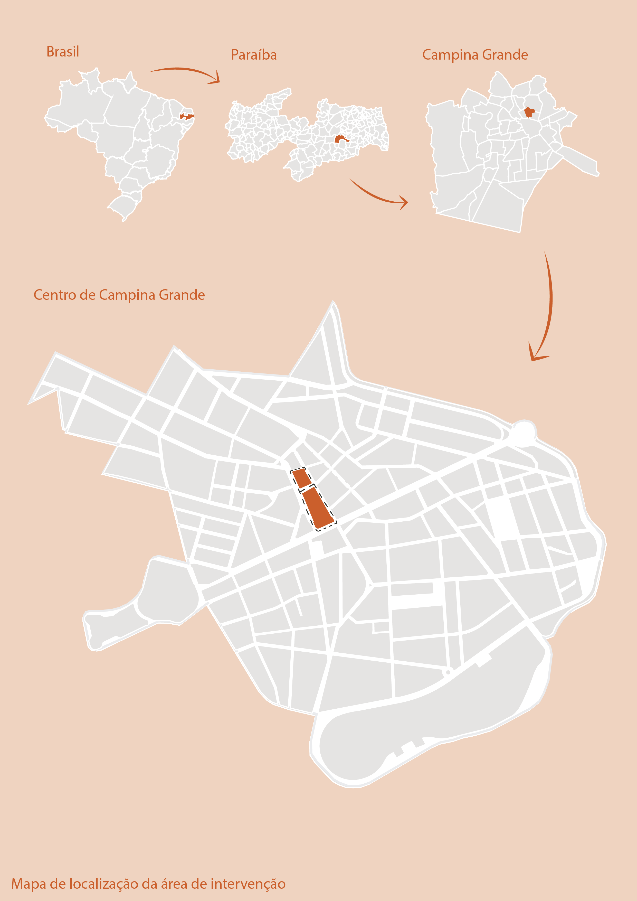
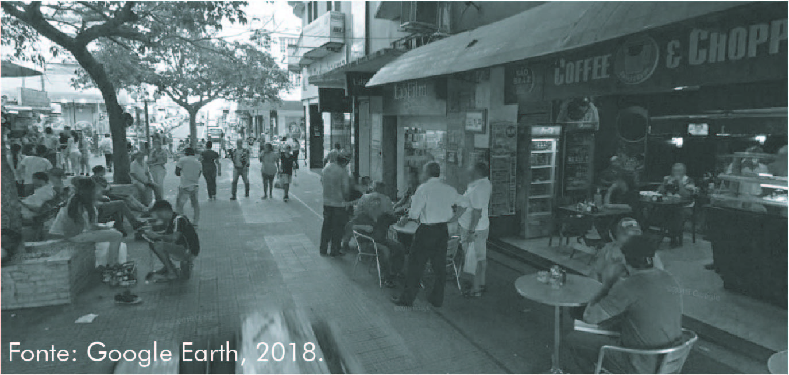
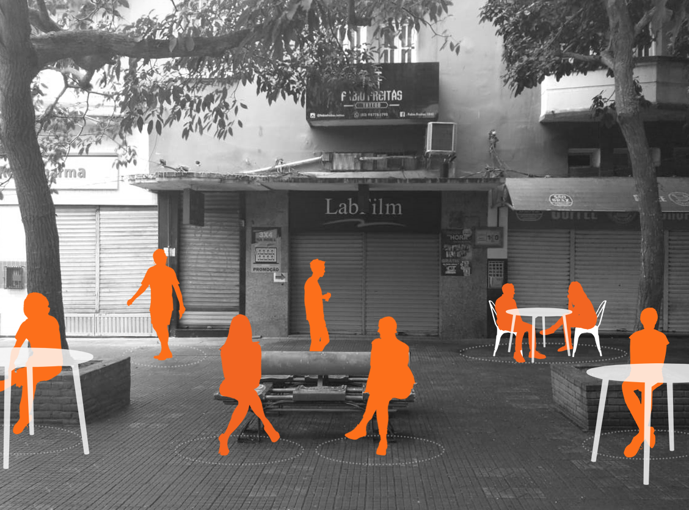
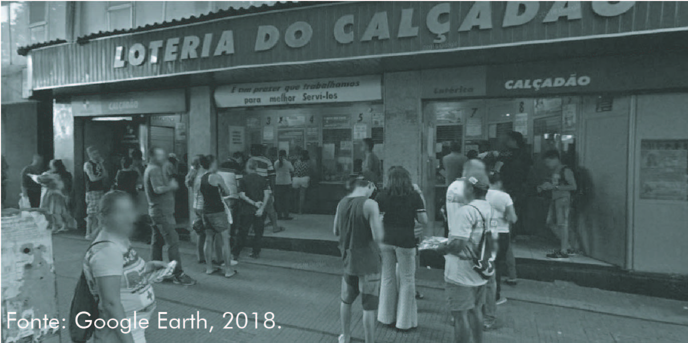
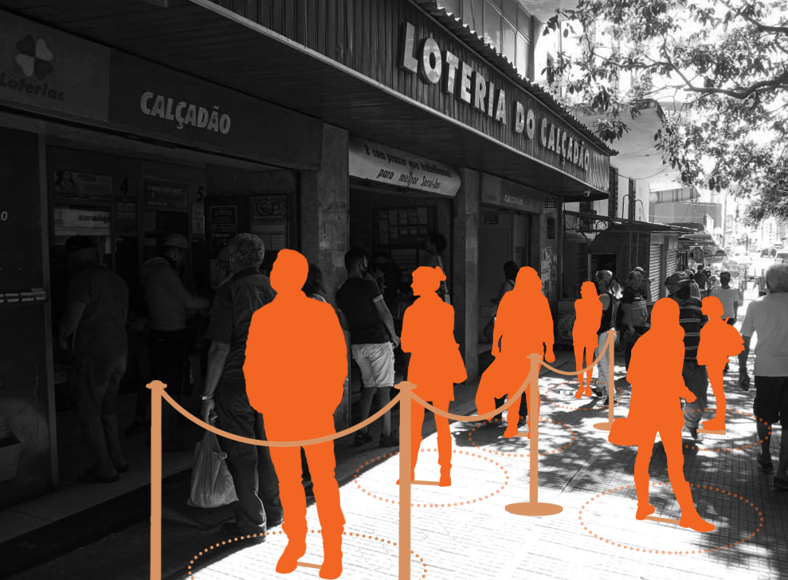
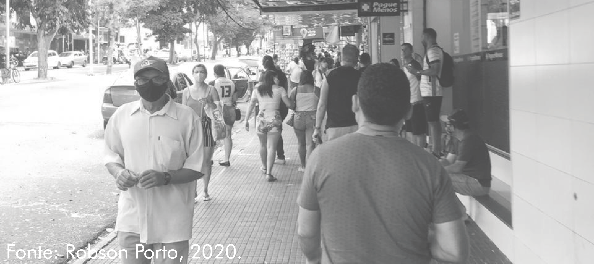
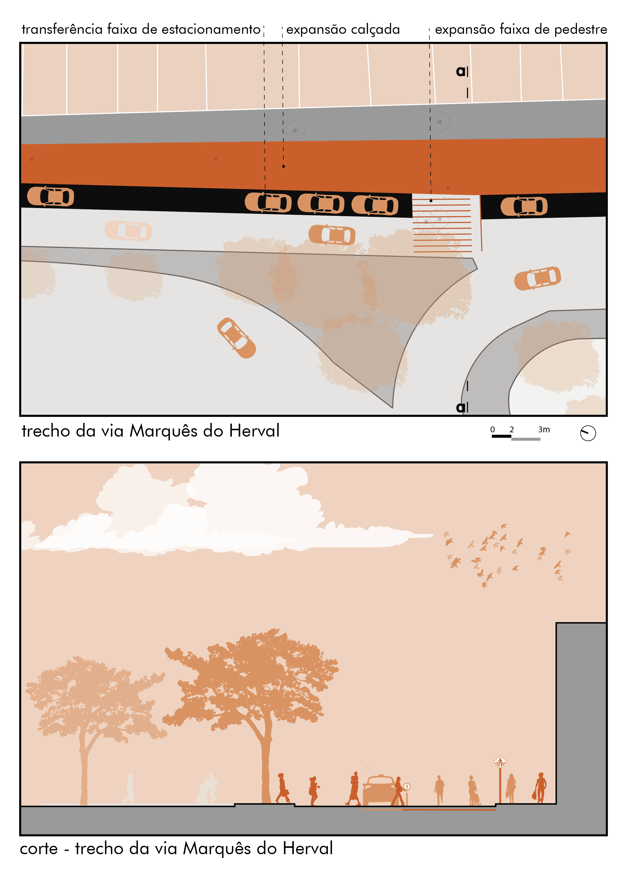
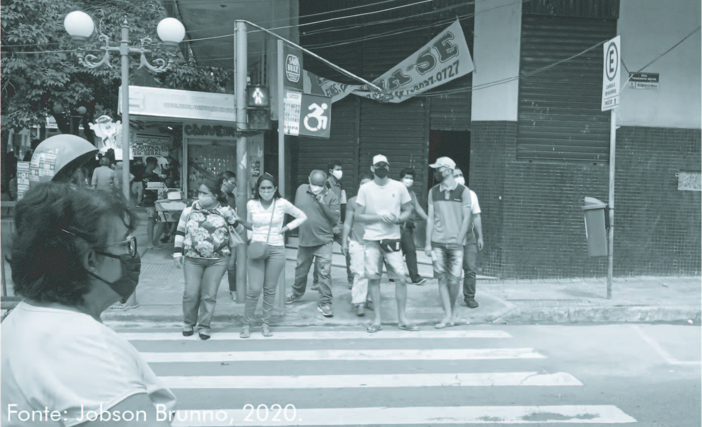
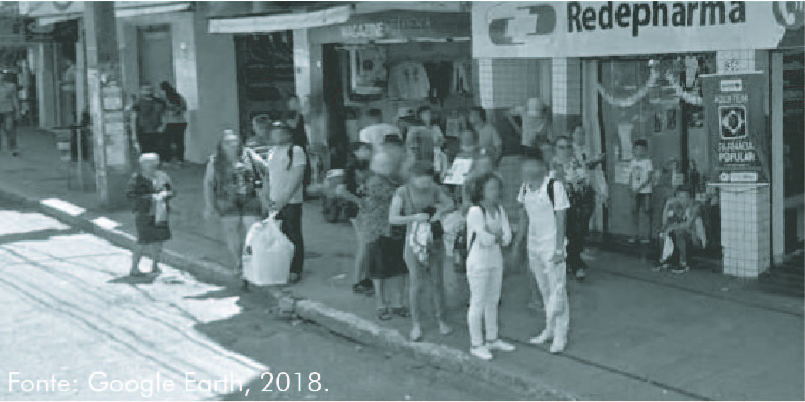
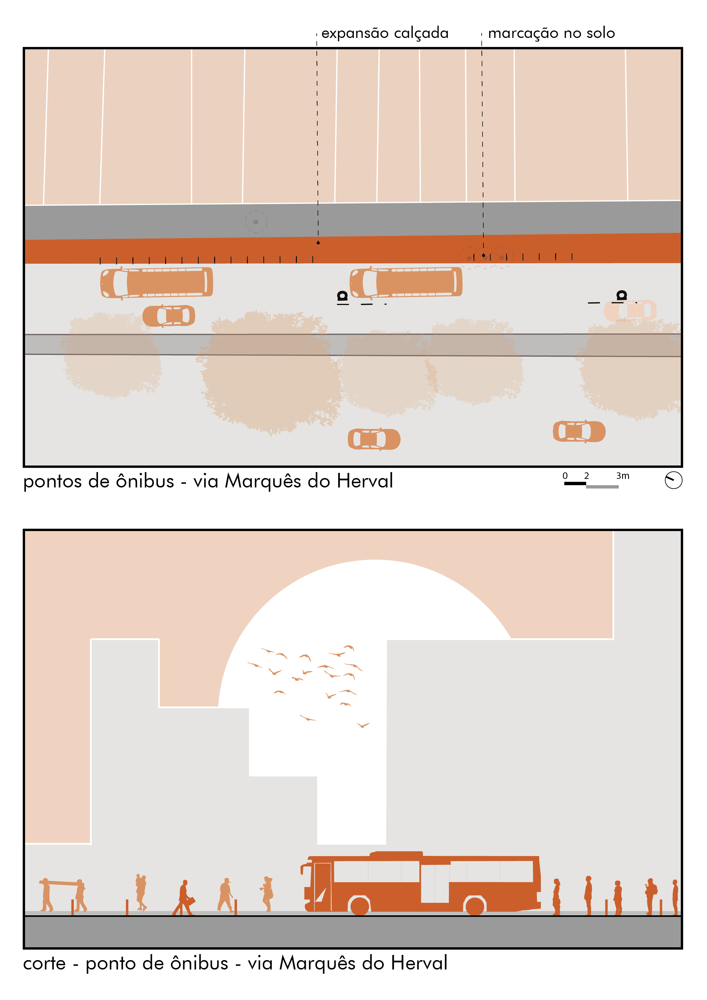

©2017 LabRua
Template: Bootstrapious
+ Kishan B

Calçadão - Repensando espaços Públicos no contexto da COVID-19
2020-06-10; covid19, divisão-sexual-do-trabalho, mulheres, periferia, Campina-Grande
A crise sanitária enfrentada diante a pandemia do novo coronavírus (COVID-19) está afetando as condições de vida na cidade e aprofundando as desigualdades sociais. No estado da Paraíba, a disseminação da doença ocorreu a partir das maiores cidades, João Pessoa, Campina Grande, expandindo-se para as cidades da região imediata (MIRANDA et al, 2020, pág.3). Segundo dados da Secretaria Estadual de Saúde (2020), em Campina Grande, até o dia nove de setembro, já são 12.490 casos confirmados da doença e 343 mortos. É importante destacar que a cidade tem um papel polarizador para a região, concentrando no bairro do Centro atividades comerciais e de serviços, que atendem também municípios do interior do nordeste.
por Ana Clara Medeiros, Beatriz Souza, Bruno Coelho, Douglas Almeida, Jobson Brunno.
Apesar do cenário crítico que ainda vivemos, frente ao atual contexto político, o poder público municipal vem flexibilizando as medidas de restrição. Além da negligência aos territórios vulneráveis, as ações até agora engendradas, pouco consideram as intervenções urbanas como forma de combate a disseminação da doença. Nesse sentido, articulado aos estudos do Nacto (2020), este trabalho apresenta algumas diretrizes de intervenção considerando a realidade de Campina Grande.
A área de intervenção é o Calçadão Jimmy de Oliveira, localizado na Rua Cardoso Vieira, no bairro do Centro. Inaugurado em 1975, o espaço é parte da história e da cultura campinense, e mais do que um lugar de passagem que concentra atividades de comércio e serviço, é espaço de encontro e permanência, especialmente para a população mais idosa¹ da cidade.
¹ Segundo Dantas (2018), 86,4% dos usuários da área possuem mais de 60 anos. Essa população compõem o grupo de risco, estando mais vulnerável a doença.

Considerando a relevância do calçadão para a dinâmica das ruas da área central, a proposta compreende também as ruas do entorno do quarteirão em que ele está localizado.

O diagnóstico da área demonstrou a necessidade de intervenção em pelo menos seis (tipos de) áreas que serão descritas a seguir. Pelo menos três delas estão localizadas no Calçadão, são os cafés e lanchonetes, fiteiros e loteria. As faixas de pedestre, paradas de ônibus e calçadas são outros pontos de intervenção e estão situadas no decorrer das ruas.

Os cafés e lanchonetes com interface para o Calçadão são pequenos e possuem balcões e mesas que dificultam o distanciamento social e favorecem aglomerações. A proposta é transferir provisoriamente parte das mesas das lanchonetes para o centro da área, nas proximidades de bancos e árvores já existentes. O posicionamento central está ligado a proteção do fluxo de pedestres nas laterais, e o aproveitamento do mobiliário existente, com possibilidade de sombreamento natural. A distribuição procurou diminuir o impacto aos usos pré-existentes ao posicionar e inserir um número de mesas adequado ao distanciamento social dentro dos comércios e no Calçadão.


A loteria é um outro ponto convergente de pessoas. Suas dimensões e o ordenamento e direção das filas, que se estendem ao espaço público conforme os caixas de atendimento, geram uma dinâmica que atrapalha o fluxo de pedestres e inibe o distanciamento social. A solução apresentada substitui as quatro filas por uma fila única delimitada por balizas. Ela também restringe a posição dos usuários às marcações do piso, conforme prevê o Decreto estadual nº 40.304/2020.


As filas de atendimento dos fiteiros do Calçadão também causam transtornos a circulação dos pedestres e dificultam o distanciamento social. Para resolver o problema, também se utiliza como estratégia a adoção de um distanciamento mínimo de 1,5m (Decreto estadual nº 40.30/2020) em relação ao atendimento e a marcação da posição dos clientes no piso. As soluções de orientação das filas estão relacionada a posição de cada fiteiro. Para alguns foi proposta a utilização de pedestais separadores, entre o fiteiro e os clientes, para que pedidos possam ser realizados respeitando o distanciamento mínimo mencionado anteriormente.


As calçadas das ruas Marquês do Herval e Venâncio Neiva são estreitas para o fluxo de pedestres exigido. Em ambas às ruas propõe-se usar uma faixa de rolamento para estender as calçadas. Apesar dessa solução em comum, elas têm dimensões e usos diferentes que demandam descrições específicas.
Dividida por um canteiro central, apenas um sentido da Rua Marquês do Herval é parte do recorte da área de intervenção. Ele é composto por duas faixas de rolamento para veículos e outra dedicada ao estacionamento com áreas para: i - descarga de mercadoria; ii - praça de táxi; iii - praça de moto táxi; iv - paradas de ônibus. Diante a extensão da calçada, a faixa de estacionamento passou a ocupar a faixa vizinha, restando apenas uma outra faixa para o tráfego de veículos. A ideia é priorizar o pedestre e garantir a proteção da calçada ampliada, a partir da formação de uma barreira com os veículos estacionados. Procura-se também reduzir potenciais danos de remoção para os usuários e a dinâmica da área.



A Rua Venâncio Neiva possui duas faixas de rolamento para o tráfego de veículos. Outras duas faixas estão localizadas às margens das calçadas e são destinadas ao estacionamento de carros e motos particulares, com apenas uma praça de táxi (08 carros). Considerando as prioridades apresentadas anteriormente, bem como a ampliação da calçada, propõe-se também restringir o tráfego de veículos para uma única faixa, evitando altas velocidades na via. A proposta é também que a faixa de estacionamento seja utilizada como uma espécie de barreira entre a faixa de rolamento e a calçada estendida, protegendo os pedestres do tráfego.
As faixas de pedestre do entorno analisado variam entre 1,5m (em ruas mais estreitas) e 3,0 m (em ruas mais largas). Sabe-se que o fluxo de pedestres é intenso durante o horário de funcionamento do comércio e que o atual dimensionamento das faixas dificulta o distanciamento social. Nesse sentido, propõe-se o alargamento das faixas, dobrando o tamanhos das larguras, de modo a permitir uma travessia adequada ao contexto da pandemia.

As paradas de ônibus da Rua Marquês do Herval também concentram pessoas de forma inadequada. Assim como no caso das loterias e fiteiros, procurou-se ordenar as filas, que com a ampliação da calçada, passaram a ocupar parte da faixa antes dedicada ao estacionamento dos ônibus.



Ressaltamos que possíveis intervenções não devem se restringir a esse estudo. Especialmente porque é necessário um amplo diálogo com os usuários da área, de modo a otimizar as propostas e minimizar impactos negativos. Além disso, destacamos o papel da informação e fiscalização, tendo em vista que, para além das intervenções, a efetivação das medidas depende da adesão do distanciamento social por parte da população.
Referências:
- CORONA VÍRUS BRASIL. Portal do Ministério da Saúde do Brasil, 09 de ago. de 2020. Disponível em: https://covid.saude.gov.br/. Acesso em: 09 de ago. 2020.
- DANTAS, Hugo Stefano Monteiro. O Calçadão da Rua Cardoso Vieira: Paisagem (não tão) notável do Centro Histórico de Campina Grande (PB). Trabalho de Conclusão de Curso (Bacharel em Arquitetura e Urbanismo) – Centro de Tecnologia e Recursos Naturais, Unidade Acadêmica de Engenharia Civil e Arquitetura e Urbanismo, Universidade Federal de Campina Grande, Campina Grande, 2018.
- MIRANDA, L. et al. Dossiê Nacional “As Metrópoles e a COVID-19: O enfrentamento da COVID-19 nos territórios populares - Monitoramento das políticas de enfrentamento da pandemia (Relatório Parcial – Paraíba, João Pessoa e Campina Grande). Instituto Nacional de Ciência e Tecnologia Observatório das Metrópoles, Rio de Janeiro, Disponível em: https://www.observatoriodasmetropoles.net.br/wp-content/uploads/2020/07/Dossi%C3%AA-N%C3%BAcleo-Para%C3%ADba_An%C3%A1lise-Local_Julho-2020.pdf. Acesso em: 09 set. 2020.
- NACTO. Streets for Pandemic Response & Recovery. Nacto, 21 de Maio de 2020. Disponível em: https://nacto.org/wp-content/uploads/2020/05/NACTO_Streets-for-Pandemic-Response-and-Recovery_2020-05-21.pdf. Acesso em: 01 de ago. 2020.
- PARAÍBA. Decreto nº 40.304, de 12 de junho de 2020. Dispõe sobre a adoção do plano Novo Normal Paraíba, de medidas temporárias e emergenciais de prevenção de contágio pela COVID-19 (Novo Coronavírus) no âmbito da Administração Pública direta e indireta, bem como sobre recomendações aos municípios e ao setor privado estadual. Disponível em: https://paraiba.pb.gov.br/noticias/governo-do-estado-apresenta-plano-de-retomada-gradual-e-segura-das-atividades-na-paraiba/DecretoNovoNormalPBconvertido.pdf. Acesso em 10 de Ago. de 2020.